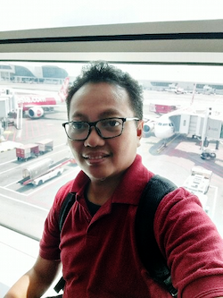

Mufti Aziz Ahmad, S.Kom
Contact
Address
Jl. Bandeng Raya No I-09, Minomartani, Sleman, DIY
Phone
+62 812 9457 3390
Email
mufti.aziz@gmail.com /
mufti.aziz@sedaniainnovator.com
Birth
Wonogiri, May 28 1974
Linkedin
https://www.linkedin.com/in/mufti-aziz-ahmad-171b576a
Additional Skills
- Database Server : MySQL, Microsoft SQL Server, dan Oracle.
- Web Programming : PHP, Yii/Yii2 Framework, Laravel, PHP Slim, CI, HTML5, ANgularJs, Angular, JQuery, CSS, Json, Bootstrap.
- Google Map API
- Web Console and API (Web Service) Programming : Yii/Yii2, Laravel, PHP Slim, Postman, Insomnia, Json, XML
- Responsive Web Application : Smartadmin, AdminLTE, Bootstrap.
- Tools Web Programming : Visual Studio Code, NetBeans, PHPStorm.
- Tools Bussiness Process : IBM BPM, Joget Framework.
- Tools Mockup Design: Microsoft Visio, Balsamiq Mockup, Omnigraffle.
- Tools Chart Design : Microsoft Visio, Omnigraffle.
- Source Control Management Tools : Mercurial HG (TortoiseHg, SourceTree), Git (Fork, SourceTree, GitKraken), Kdiff3
- Source Code Collaboration : BitBucket, Gitlab, Github
- Teamwork Management Tools : JIRA, Asana, SmartSheet